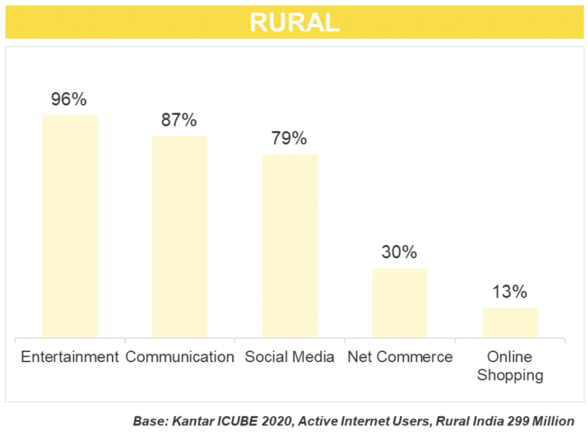
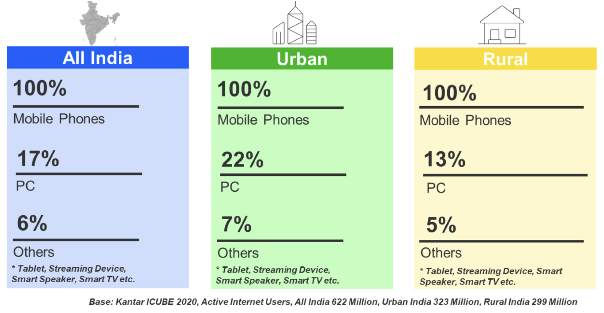
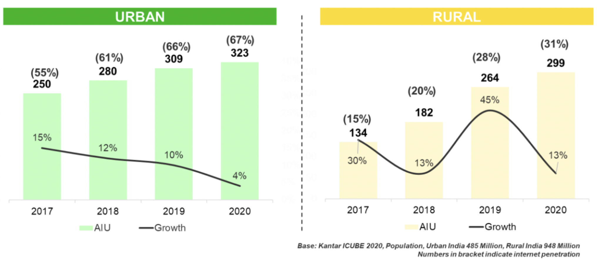

Case Study• AR / Assistive Technology
• Rural Sanitation
Raksha
AR as an assistive technology for building community interaction towards rural sanitation and wellbeing.
RoleUX Research & Design
Timeline2022 to 23
DomainSocial Impact · SDG 6
TypeMobile App + AR
01 Project Brief
What is Raksha?
Raksha is a mobile app that uses augmented reality as an assistive technology to spark community participation around rural sanitation and wellbeing. Grounded in SDG 6 (Clean Water & Sanitation), it shifts the focus from building toilets to driving the behaviour change that makes them last.
The goal: make sanitation feel collective, rewarding, and approachable for low-literacy, first-time smartphone users in rural India.
UX research
User interviews
Conducting surveys
Wireframing
High-fidelity design
Usability testing
02 The Challenge
The problem we set out to solve
Behavioural change is the crucial, and hardest, part of promoting good sanitation. Conventional programs assume that providing infrastructure is enough, but real, lasting change depends on community ownership, awareness, and motivation, not just access.
Infrastructure isn’t enough. Toilets get built but go unused without sustained behaviour change.
Top-down messaging falls flat. Programs talk at communities rather than involving them.
Low literacy, first-time users. Text-heavy, complex interfaces exclude the very people they aim to help.
Weak feedback loops. People rarely see the collective impact of their everyday actions.
03 Research
Understanding the ground reality
I combined secondary research, stakeholder mapping, and primary field work, including ethnographic study, to understand how rural communities actually relate to sanitation.
Secondary research
Behavioural change, not just infrastructure, is the crucial lever for long-term sanitation improvement in rural India. The evidence is clear, and so is the opportunity: rural India is mobile-first and hungry to engage.
0%
Rural users are mobile-first
Of rural digital users reach the internet on mobile phones, the screen we had to design for.
Kantar ICUBE 2020
0M
Rural internet users
Rural active internet users by 2020, around 31% penetration and climbing.
Kantar ICUBE 2020
0%
Toilet access
Households with toilet access after a behaviour-change campaign, up from 30%.
UNICEF
0%
Fewer diarrhoea cases
Lower incidence among children in participating households.
WHO



What the data told me
Mobile-first by default. Rural users reach the internet almost entirely through phones (100%), barely through PCs (13%).
They’re here to engage, not transact. Rural use skews to entertainment (96%), communication (87%), and social media (79%) over commerce.
Top-down messaging fails. Conventional programs assume information alone changes behaviour, with one-way messages from outside “experts.”
Change needs participation. Lasting change comes from improving education, communication, and information systems with the community, not at it.
My observation
Real community mobilisation needs participatory methods, which meant making the solution more personalised and user-centric. Paired with a mobile-first, engagement-led rural audience, this pushed me to research how smartphones are actually used in villages, and toward an app that feels social and rewarding rather than instructional.
Stakeholder mapping
Everyone who shapes sanitation in the village orbits the community. Tap a stakeholder to see their tier, role, influence, and who they connect to.
Raksha
Tap a node · tap the centre to reset
Primary research
Field study
I visited Baragain Village in Lohardaga, Jharkhand, mapping its layout, demographics, and daily life: 304 households, around 1,478 people, and a 66.9% literacy rate, with nearly every home owning at least one smartphone.
Habitation profile
Profiling people by age group revealed who actually uses smartphones, and how. The 15–28 group are active users; older adults rarely are, shaping who the app must reach and through whom.
Ethnographic study
Observing daily routines surfaced the real barriers: open defecation as habit, unsafe waste disposal, weak handwashing practices, and abandoned government toilets. Problems of behaviour, not just infrastructure.
04 Analysis
From insights to a design direction
I turned a mountain of field notes into a clear direction: clustering observations, finding the opportunity, defining who to design for, mapping their journey, and distilling it all into a single design statement.
01 · Affinity mapping
I clustered raw research notes into themes to see the patterns, low awareness, weak personal motivation, infrastructure gaps, and top-down campaigns that fail to connect.
02 · Identifying the scope
The patterns pointed to a clear opening: with smartphones now common in rural India, interactive, community-based platforms can drive Information, Education & Communication (IEC), and a real sense of shared ownership.
03 · Defining the user segment
I focused on the 15–28 age group: active smartphone users who adopt new trends quickly and influence their peers, the natural carriers of behaviour change within the community.
04 · User journey
Mapping the journey across Learning, Motivation, and Practice exposed where engagement drops, and where design could intervene, turning pain points into opportunities.
05 · Design statement
Everything converged into one statement, the What, Whom, Why, and How, that anchored the rest of the project.
Design statement
For smartphone-using individuals aged 15–28 in rural villages, Raksha is an interactive, community-based platform that drives long-term behaviour change towards good sanitation, through community learning and motivation rather than top-down instruction.
05 Ideation
Finding the right idea
With a clear design statement in hand, I generated broadly, sharpened the concept, and prioritised what to actually build.
01 · Brainstorming
I ran a wide-open brainstorm, generating ideas across features, usability, communication, technology, awareness, and gamification, to widen the solution space before narrowing it down.
02 · Idea napkin
I distilled the brainstorm into a single, sharp pitch, the product, target group, the problems it solves, how, and the benefits, as a one-page sanity check before committing.
03 · Feature ideation (MoSCoW)
I prioritised features with a MoSCoW analysis, separating the essentials, like social sharing, rewards, and AR resources, from the nice-to-haves and what to leave out for now.
04 · The AR bet
Augmented reality became the way to turn a dry, top-down topic into something playful, social, and emotionally engaging, meeting people where they are.
06 Solution
Raksha, built around the community
A simple, visual, audio-friendly app that lowers the barrier to participation, and uses AR to make sanitation feel rewarding and shared.
01
Getting started with the application
Choose your preferred language to begin.
Move through four quick intro screens showing what the app does.
Follow a progress timeline that shows what’s done and what’s next.
Scan your Aadhaar card to register with minimal typing.
02
Scan, learn, and complete tasks in AR
Open a task from the task list.
Scan its AR target, a poster on a home wall, with your phone.
Watch interactive 3D animations and videos explaining what to do and why.
Mark the task complete and earn rewards for taking part.
03
Community feed and rewards
See hygiene tasks other villagers have shared.
Get inspired and learn from one another.
Like and comment on posts, including audio comments for those who don’t type.
Open the rewards page to track points and claim gifts.
04
Report hygiene issues on the ground
Spot a defect: broken toilets, dry or leaking taps, unsafe drinking water.
Snap a photo and file a quick report.
Each report puts the problem on the record.
Makes it visible to NGOs and government bodies so they can act.
A closer look
The app, screen by screen
07 Reflection
My experience building Raksha
Ground-level research shapes meaningful design. Working directly with rural communities in their own environment surfaced needs and challenges no report could, and reminded me that empathy and observation matter as much as design tools.
Good design is simple and useful, not just stylish. With limited resources, the work has to be easy to understand, accessible, and focused on real needs.
Design with users, not for them. Involving the community in the process made the solution more relevant, accepted, and sustainable.